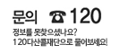

이 헌법공포 당시의 국회의원의 임기는 제1항에 의한 국회의 최초의 집회일
전일까지로 한다. 국정감사 및 조사에 관한 절차 기타 필요한 사항은 법률로
정한다.
대통령은 국가의 안위에 관계되는 중대한 교전상태에 있어서
국가를 보위하기 위하여 긴급한 조치가 필요하고 국회의 집회가 불가능한때
한하여 법률의 효력을 가지는 명령을 발할 수 있다.

서울특별시청 04524 서울특별시 중구 세종대로 110
대표전화: 02-120 또는 02-731-2120 (365일 24시간 운영/유료)
@ Seoul Metropolitan Government all rights reserved